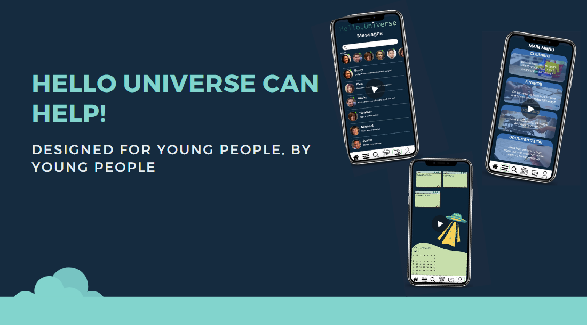
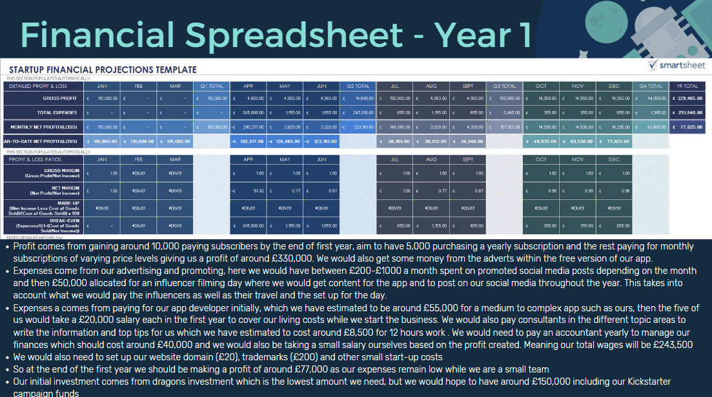

Hello Universe
During my third year, I took part in a Business and Enterprise module in order to expand my knowledge of the business field and learn valuable skills surrounding branding, competitors, start-ups and lots more. During this module we covered different areas of business each week, learning relevant theory, and covered topics such as delivery and operations, value capture and scalability and vision, value and mission statements. After we had completed the teaching, we were teasked in groups to come up with a business idea and presentation and then deliver it in a 'Dragons Den' style pitch.


Once in our groups, we practiced ideation techniques such as brainstorming and mind mapping to generate an idea for our business and decided that we would create an app which would aid young people in adjusting to adult life. To start the process we sent out intial surveys to our target audience to gage their thoughts on the app and the features they might like to see included. Using this information we could begin to choose the features for the app and design our branding.
After we had finished the initial concept, we had to start thinking from a more business point of view. We generated financial plans for the business along with competitor analyisis against similar businesses such as Real World and YouTube. We planned out what the payment schemes for the app would be and then put all of this information into our Pitch Deck which we then presented in a 'Dragons Den' style pitch. This module developed a wide variety of my skills including design, business and pitching.
